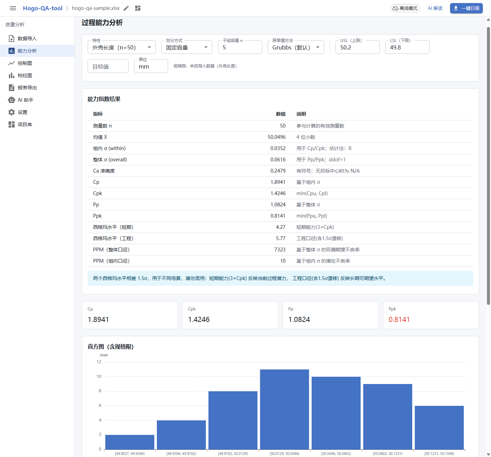

结论先说：Cp/Cpk 描述「当前过程在受控状态下的瞬时潜力」，用组内 σ；Pp/Ppk 描述「一段时间内实际交付出去的水平」，用整体 σ。两者分母不同，不能互相冒充。把 std_sub 直接赋给 std_total，等于假设过程从不漂移——这恰恰是能力分析最想检验的事。
缺陷长什么样
最初的能力计算只有一条路径：算样本标准差，然后 Cp、Pp 都拿它当分母。代码大致是这种形态：
// 错误：两个口径共用同一只 σ
const std_total = sampleStd(values); // ddof = 1
const std_sub = std_total; // ← 问题在这一行
const cp = (usl - lsl) / (6 * std_sub);
const pp = (usl - lsl) / (6 * std_total); // 恒等于 cp后果不是「算出两个略有差异的数」，而是 Pp 永远等于 Cp。指标之间的差值本来是判断过程漂移的信号：Cp 很好、Pp 很差，说明设备能力够，但批次间有偏移或趋势。两者相同，这个信号就被彻底抹掉了。
更隐蔽的是它不会报错。页面上四个指数字段齐全，数值也在合理区间，评审时没人会怀疑；只有拿去做横向对比，才会发现所有特性的 Cp/Pp 比值都精确等于 1。
两个 σ 到底差在哪
组内 σ 只看「同一子组内部」的离散，把子组之间的移动当作与能力无关的偏移；整体 σ 用全部样本一起算，漂移、换批、刀具磨损都会计入。常用的两种估计：
- 组内：子组极差法
σ̂ = R̄ / d₂，或子组标准差法σ̂ = S̄ / c₄。只反映普通原因波动。 - 整体：全部样本的样本标准差，
ddof = 1。普通原因 + 特殊原因一起计入。
所以正确的关系不是「Cp 和 Pp 应该接近」，而是 σ_within ≤ σ_overall，因此 Cp ≥ Pp。出现 Pp > Cp，通常意味着样本被切分成了不该切的子组，或者数据本身不满足计算前提。
同一份样本，四种口径
修完之后用一份 50 件、子组容量 5 的合成样本跑能力分析（规格 49.8–50.2 mm）：
| 指标 | 数值 | 说明 |
|---|---|---|
| 样本量 n | 50 | 参与计算的有效测量数 |
| 均值 x̄ | 50.0496 | 相对规格中心偏 +0.0496 |
| 组内 σ（within） | 0.0352 | 用于 Cp/Cpk |
| 整体 σ（overall） | 0.0616 | 用于 Pp/Ppk，ddof = 1 |
| Cp / Cpk | 1.8941 / 1.4246 | 基于组内 σ |
| Pp / Ppk | 1.0824 / 0.8141 | 基于整体 σ |
| PPM（组内 / 整体） | 10 / 7323 | 两个口径的期望不良率 |
整体 σ 比组内 σ 大 75%，对应 Cp 1.89、Pp 1.08。翻译成现场语言：设备本身有能力做到 1.89，但按过去这段时间的实际波动交付，只有 1.08；预期不良从 10 PPM 变成 7323 PPM。如果只看 Cp，会得出「过程优秀、无需干预」的结论。

另外两个特性
同一批样本里再取两个特性，可以看到比值不是固定的 1.75，而是随过程稳定性变化：
| 特性 | Cp | Cpk | Pp | Ppk |
|---|---|---|---|---|
| 转轴直径 | 1.27 | 1.10 | 1.02 | 0.88 |
| 端面跳动 | 1.31 | 0.88 | 1.16 | 0.78 |
转轴直径的 Cp/Pp 差距小，说明过程相对稳定；端面跳动 Cpk 0.88 而 Cp 1.31，差距主要来自均值偏移，不是波动变大。这两类问题对应的动作完全不同：前者查漂移来源，后者调中心。只有一个 σ 的时候，两种诊断都做不出来。
修正以后，控制图也要跟着对齐
能力分析不是孤立的页面。控制图的控制限同样应该建立在组内 σ 上，否则限值会被批次漂移撑宽，特殊原因永远判不出来。工具里 7 种控制图（X̄-R、X̄-S、I-MR、p、np、c、u）统一用组内 σ 推控制限；判异用 12 条准则，按「越界 / 链 / 趋势 / 周期」分成 W1–W4 与 N1–N8 两组，而不是只画一条 ±3σ。
能力指数和判异结论必须能对上：如果控制图判出失控，Pp/Ppk 就只能作为描述性统计，不能当作过程能力承诺。这个边界如果不在界面上写清楚，很容易被当成「Ppk 0.81 就是过程不行」。
怎么保证这次不是又算错了
统计口径的修正最怕「看起来对」。这个工具的做法是把内核做成纯函数，全部计算不依赖 React 和 DOM，单测直接对数值断言：
npm run test # 内核单测：σ 估计、Cp/Cpk、Pp/Ppk、判异准则
npm run sample:verify # 用仓库自带样本复算页面上的每一个数字样本、规格限、子组划分都在仓库里，sample:verify 输出的 Cp 1.8941、Pp 1.0824 与页面完全一致。任何人拿到仓库，不需要信任截图，一条命令就能验证。这也是这个工具坚持单文件离线运行的原因：数据不出本机，结论可复算。
边界：这些数字什么时候不该用
- 样本太少。几十件样本估出的 σ 本身就有很大不确定性，能力指数应给置信区间，而不是一个精确到四位的小数。
- 分布明显非正态。Cp/Pp 的 PPM 换算是基于正态假设的；偏态或双峰数据应先做变换或改用非参数口径。
- 过程未受控。控制图判异时，Cp/Cpk 失去「瞬时潜力」的含义，只剩参考价值。
- 规格限来自数据本身。用实测数据反推规格，再算能力指数，是循环论证。
如果重来一次
- 先把两个 σ 的命名写进类型。叫
stdWithin/stdOverall，而不是stdSub/stdTotal；名字对了，赋值错误就很难写出来。 - 给每个指数标注分母口径。界面上直接写「基于组内 σ」「基于整体 σ」，评审时不用猜。
- 用不变量做测试。断言
Cp ≥ Pp、Cpk ≤ Cp、Ppk ≤ Pp，比逐个比对具体数值更能抓住口径错误。